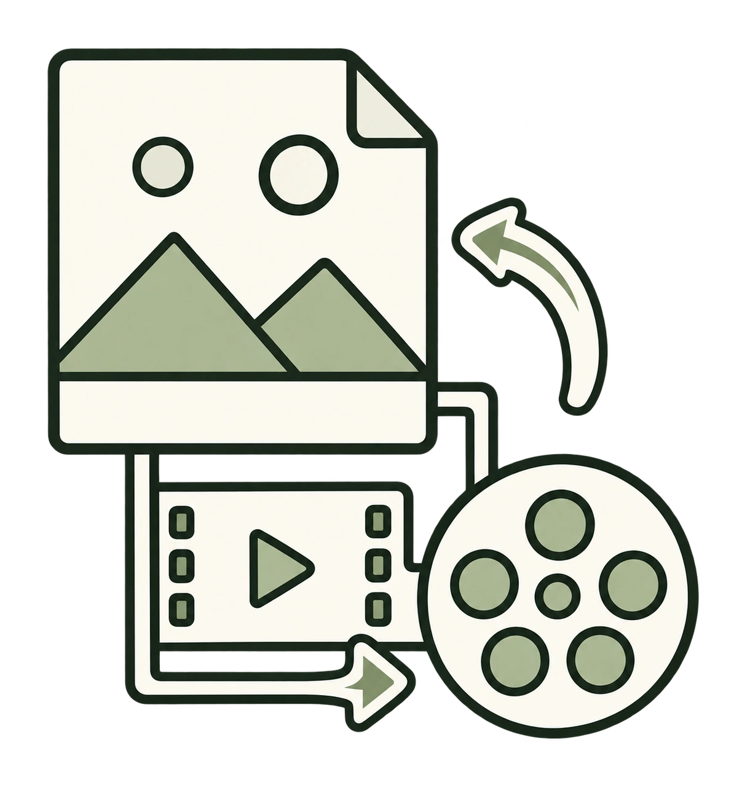
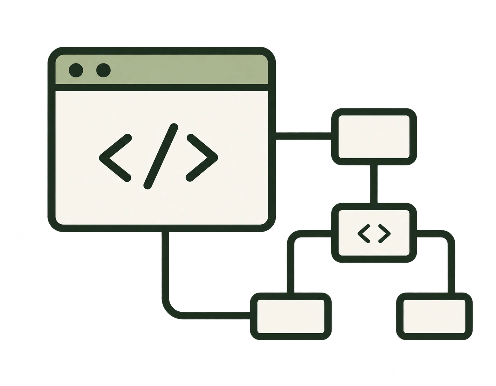
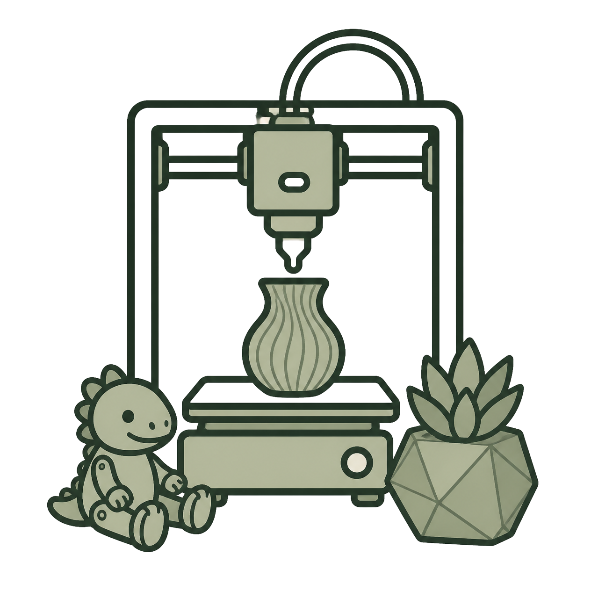
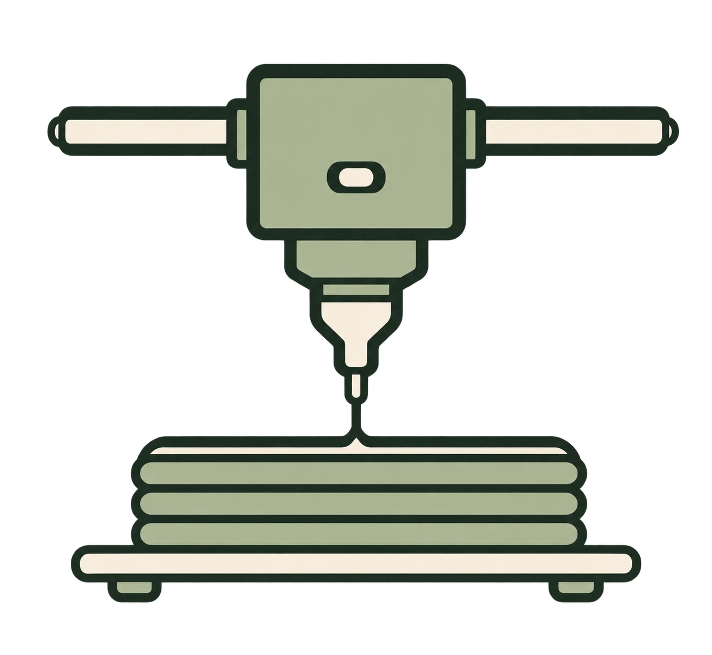
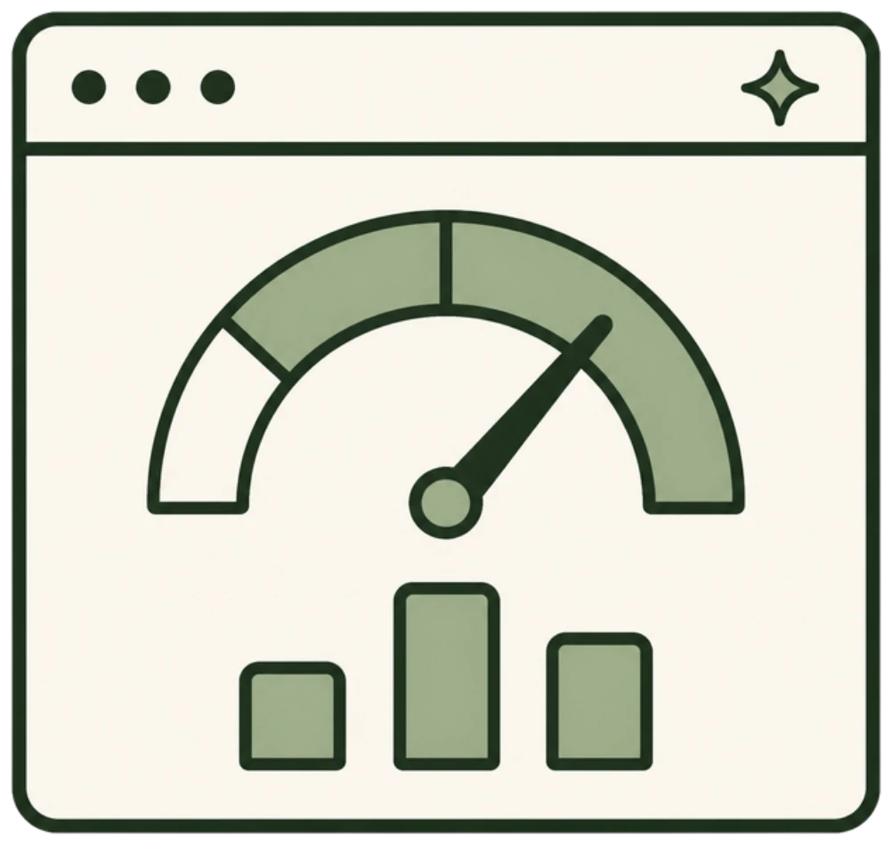
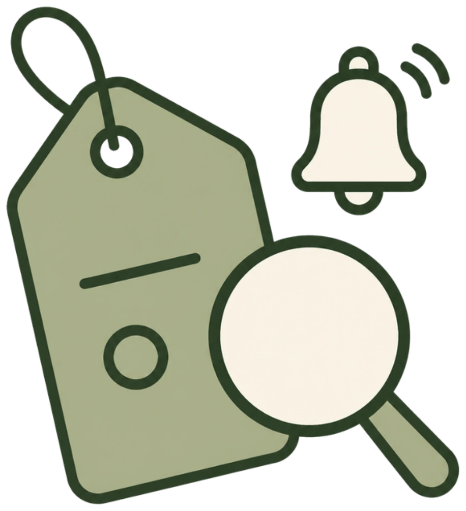
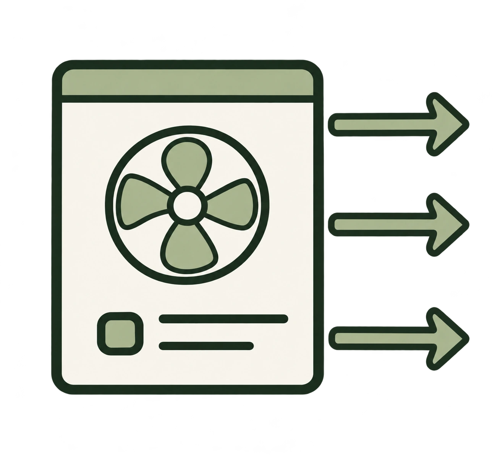
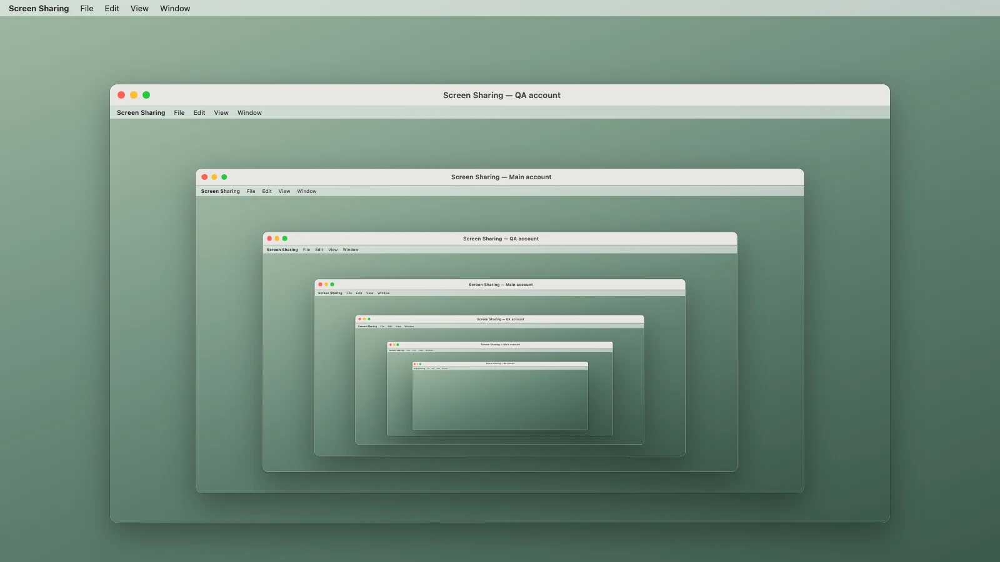

Featured projects

Other projects
11 projects



AI Usage
Track Claude Code, Codex and Antigravity plan limits and usage by job and model on your Mac.
Developer tool
Price Watch
Get alerts for new Marketplace, eBay and Craigslist listings that match your exact specs and budget.
Self-hosted toolAI-billboard
Turn local Markdown files into native Mac widgets for daily briefs, checklists, and small dashboards.
Mac app Preview
H2D Custom Dashboard
Local status monitoring and optional exhaust control for the Bambu H2D.
3D printingqtfaststart2
Move MP4 metadata to the front for faster streaming starts without re-encoding.
Developer toolbambu-headless
Run a Bambu H2D from a macOS terminal while keeping Handy enabled and Developer Mode off.
3D printingWritings
Bypassing Bambu’s MQTT signature check by masquerading as Bambu Studio
How a dyld executable-path shim and a C++ bridge let a Python CLI sign H2D print commands using Studio’s own closed-source networking dylib.
Giving my AI agent its own Mac account for QA
How I use a second macOS account to give an AI agent its own desktop for app testing while I keep working.

Read article →Building an AI Trader With Deterministic Risk Controls
I built an experimental trading system that uses one model to propose trades, two others to review them, and Python to enforce the rules between those steps.
Read article →